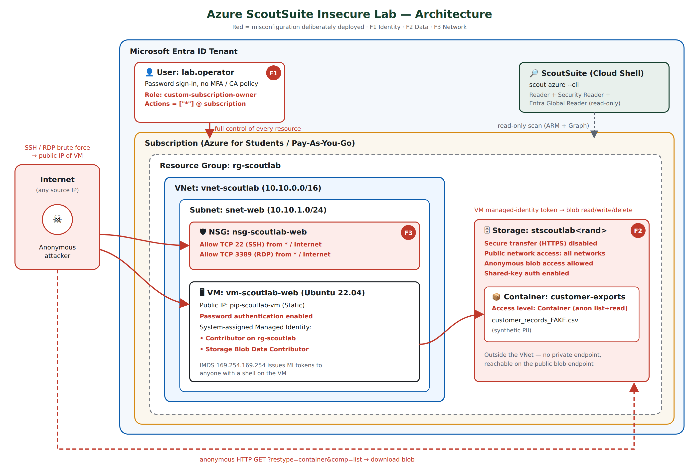

ScoutSuite Review of an Intentionally Insecure Environment
| Assignment | Cloud Security (Africa Hackon) |
| Author | Nelson Ngumo |
| Date | 16 November 2026 |
| Tool | NCC Group ScoutSuite (Azure provider, scout azure --cli) |
| Scope | 1 Entra ID tenant · 1 subscription · resource group rg-scoutlab |
| Deployment | Terraform (Cloud-Security/terraform) |
I deployed a small Azure environment with deliberate misconfigurations and scanned it with ScoutSuite. I picked three findings, one each for Identity, Data and Network. These three findings link up into a single attack path. An anonymous attacker can read customer data with no credentials at all. A password guess on an exposed VM gives an attacker a managed-identity token that controls the whole resource group. A single stolen user password gives control of the entire subscription.
| # | Finding | Category | Severity | Fix first because… |
|---|---|---|---|---|
| 1 | F2 Public blob container, HTTP allowed | Data | CRITICAL | Exploitable right now with one unauthenticated HTTP request. PII is already exposed. |
| 2 | F3 NSG allows SSH/RDP from Internet | Network | HIGH | Bots scan for it constantly. A foothold leads to a managed-identity token with Contributor on the resource group. |
| 3 | F1 Custom subscription-owner role (*) on a standard user | Identity | HIGH | Largest blast radius (whole subscription), but the attacker first has to steal the credential. |
| Required component | Deployed resource | Deliberate weakness |
|---|---|---|
| User | lab.operator@<tenant>.onmicrosoft.com | Custom role with Actions=["*"] at subscription scope, password-only sign-in |
| Azure Tenant | Default Entra ID tenant | No Conditional Access / MFA enforcement for the lab user |
| Subscription | Personal / student subscription | Holds the custom owner role definition |
| Resource Group | rg-scoutlab | VM managed identity holds Contributor on it |
| Virtual Network | vnet-scoutlab 10.10.0.0/16 | No Bastion, no private endpoints |
| Subnet | snet-web 10.10.1.0/24 + nsg-scoutlab-web | Inbound 22 and 3389 from * |
| Virtual Machine | vm-scoutlab-web Ubuntu 22.04, static public IP | Password authentication, over-privileged system-assigned identity |
| Storage Account | stscoutlab<rand> / container customer-exports | Anonymous container access, HTTPS not required, all networks allowed |

Source: Cloud-Security/diagram/architecture.svg. The red boxes are the deployed misconfigurations, and the red arrows are the attack paths analysed in Section 3.
az.scoutsuite/run_scoutsuite.sh. It installs ScoutSuite into a Python virtualenv and runs scout azure --cli --subscriptions <id> --tenant <id>. The scanning identity only needs Reader, Security Reader and Global Reader.extract_findings.py to list every flagged rule.$ az account show --query "{sub:id, tenant:tenantId}" -o table
$ python3 -m venv ~/scoutsuite-venv && ~/scoutsuite-venv/bin/pip install scoutsuite
$ ~/scoutsuite-venv/bin/scout azure --cli --subscriptions $SUB_ID --tenant $TENANT_ID \
--report-dir ~/scoutsuite-report --no-browser
$ python3 extract_findings.py ~/scoutsuite-report # lists every flagged rule by severity
| ScoutSuite | RBAC → custom role allowing * (owner-equivalent) at subscription scope. Maps to CIS Azure "Ensure that no custom subscription administrator roles exist". |
| Resource | Role scoutlab-custom-subscription-owner → assigned to lab.operator at /subscriptions/<id> |
| Exploitability | Medium. The attacker needs this user's password first, through phishing, password spraying or credential reuse. The user signs in with a password only and no Conditional Access policy requires MFA, so one leaked password is enough. The role is custom, so it is easy to miss in reviews that only look for the built-in Owner role. |
| Blast radius | Entire subscription. * includes Microsoft.Authorization/*. The attacker can create new role assignments (persistence), read storage keys, run commands on the VM (runCommand), delete resources and logs, and deploy expensive resources such as cryptominers. That covers every resource in the lab, plus anything else in the subscription. |
| Remediation | Delete the wildcard custom role, reassign the user a least-privilege built-in role scoped to rg-scoutlab, and enforce MFA through Conditional Access or Security Defaults. |
# terraform/main.tf
resource "azurerm_role_definition" "custom_owner" {
scope = data.azurerm_subscription.current.id
permissions { actions = ["*"] not_actions = [] } # owner-equivalent
}
resource "azurerm_role_assignment" "lab_user_custom_owner" {
scope = data.azurerm_subscription.current.id # whole subscription
principal_id = azuread_user.lab_user.object_id # standard user
}
$ az role definition list --custom-role-only true \
--query "[?contains(permissions[0].actions,'*')].{role:roleName,scope:assignableScopes[0]}" -o table
$ az role assignment list --assignee lab.operator@<tenant> --all -o table
| ScoutSuite | Storage Accounts → "Blob containers allowing public access", "Secure transfer (HTTPS) not required", "Public traffic allowed (default action Allow)". |
| Resource | stscoutlab<rand>/customer-exports (access level Container) holding customer_records_FAKE.csv |
| Exploitability | Trivial. No credentials are needed. The Container access level allows anonymous listing:curl "http://<acct>.blob.core.windows.net/customer-exports?restype=container&comp=list"returns every blob name, which can then be downloaded. Storage account names are discoverable through DNS enumeration of *.blob.core.windows.net. Because HTTP is allowed, anyone on the network path can also read data in transit. |
| Blast radius | All data in the container, here the (synthetic) customer PII: names, emails, phone numbers and national IDs. With real data this would be a notifiable breach under Kenya's Data Protection Act 2019. Anonymous access is read-only, but shared-key auth is still enabled, so any leaked key (for example through F1 or F3) gives full read/write/delete on the account. |
| Remediation | Set allowBlobPublicAccess=false, require secure transfer (HTTPS only), set the network default action to Deny with a private endpoint, and disable shared-key access in favour of Entra ID auth. |
# terraform/main.tf
resource "azurerm_storage_account" "lab" {
https_traffic_only_enabled = false # HTTP allowed
allow_nested_items_to_be_public = true # anonymous access permitted
shared_access_key_enabled = true
public_network_access_enabled = true
network_rules { default_action = "Allow" } # all networks
}
resource "azurerm_storage_container" "public" {
name = "customer-exports"
container_access_type = "container" # anonymous list + read
}
$ curl -s "http://<acct>.blob.core.windows.net/customer-exports?restype=container&comp=list" $ curl -s "http://<acct>.blob.core.windows.net/customer-exports/customer_records_FAKE.csv"
| ScoutSuite | Network → Network Security Groups: "SSH port open to the Internet" and "RDP port open to the Internet" (source *). |
| Resource | nsg-scoutlab-web (rules Allow-SSH-Any, Allow-RDP-Any) on snet-web → vm-scoutlab-web with a static public IP |
| Exploitability | High likelihood, moderate effort. Internet-wide scanners find open port 22 within minutes. Password authentication is enabled, so the VM can be brute-forced or credential-stuffed. The lab password is random with 16 characters, which slows this down, but any weak or reused password, or an unpatched sshd CVE, turns exposure into compromise. |
| Blast radius | The VM plus the whole resource group and its storage. From a shell, the attacker calls IMDS (169.254.169.254/metadata/identity/oauth2/token) and gets a token for the VM's system-assigned identity. That identity holds Contributor on rg-scoutlab and Storage Blob Data Contributor on the account, so the attacker can modify or delete every resource in the group and read, overwrite or ransom all blobs, private ones included. The VNet also becomes a pivot point for anything later added to it. |
| Remediation | Remove the Internet-sourced 22/3389 rules and use Azure Bastion or JIT access, switch the VM to SSH-key-only auth, and reduce the managed identity to the minimum role it needs (or remove it). |
# terraform/main.tf
security_rule { name = "Allow-SSH-Any" destination_port_range = "22"
source_address_prefix = "*" access = "Allow" direction = "Inbound" }
security_rule { name = "Allow-RDP-Any" destination_port_range = "3389"
source_address_prefix = "*" access = "Allow" direction = "Inbound" }
resource "azurerm_linux_virtual_machine" "web" {
disable_password_authentication = false
identity { type = "SystemAssigned" } # + Contributor on rg-scoutlab
}
$ az network nsg rule list -g rg-scoutlab --nsg-name nsg-scoutlab-web \
--query "[?sourceAddressPrefix=='*'].{rule:name,port:destinationPortRange}" -o table
$ nmap -Pn -p 22,3389 <vm_public_ip>
# from a shell on the VM: managed-identity token via IMDS
$ curl -s -H Metadata:true "http://169.254.169.254/metadata/identity/oauth2/token?api-version=2018-02-01&resource=https://management.azure.com/"
Each finding is scored as Likelihood × Impact (1 to 5) for this specific environment. Ties are broken by how cheap the fix is.
| Priority | Finding | Likelihood | Impact | Risk | Effort to fix | One-line remediation |
|---|---|---|---|---|---|---|
| P1 | F2 Data | 5 | 4 | 20 | Minutes, no downtime | Disable anonymous blob access and require HTTPS, then restrict the network to a private endpoint. |
| P2 | F3 Network | 4 | 4 | 16 | Minutes (Bastion takes about 1 hour) | Delete the 0.0.0.0/0 SSH/RDP rules, use Bastion/JIT and SSH keys, and reduce the VM identity's role. |
| P3 | F1 Identity | 3 | 5 | 15 | Minutes, plus coordination with the user | Replace the wildcard custom role with a resource-group-scoped built-in role and enforce MFA. |
* on the subscription (F1). Fixing F3 and F1 breaks the chain at both ends. Fixing F2 closes the separate anonymous path.
terraform destroy removes every lab resource, including the custom role and the Entra ID user.